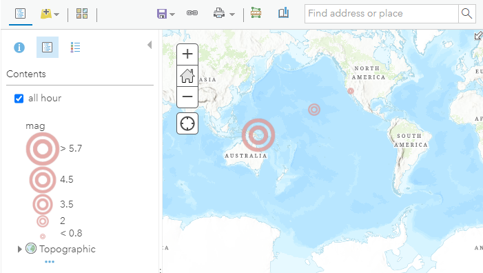
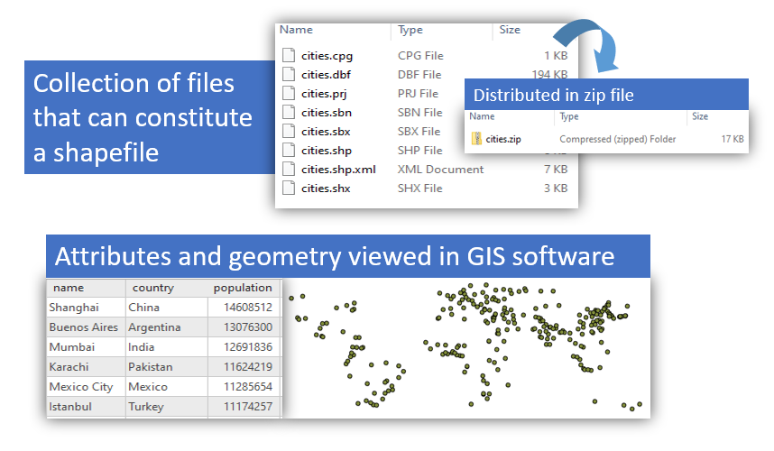
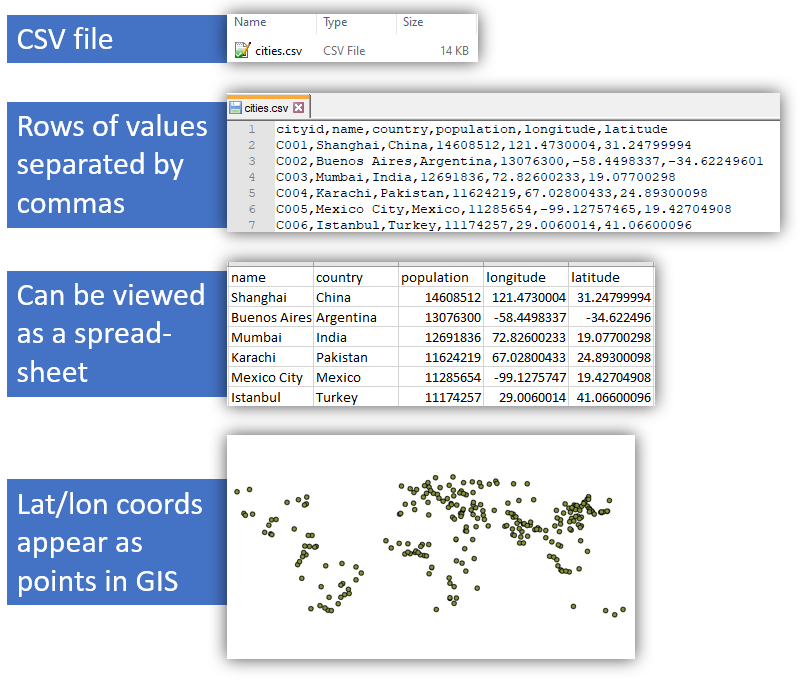
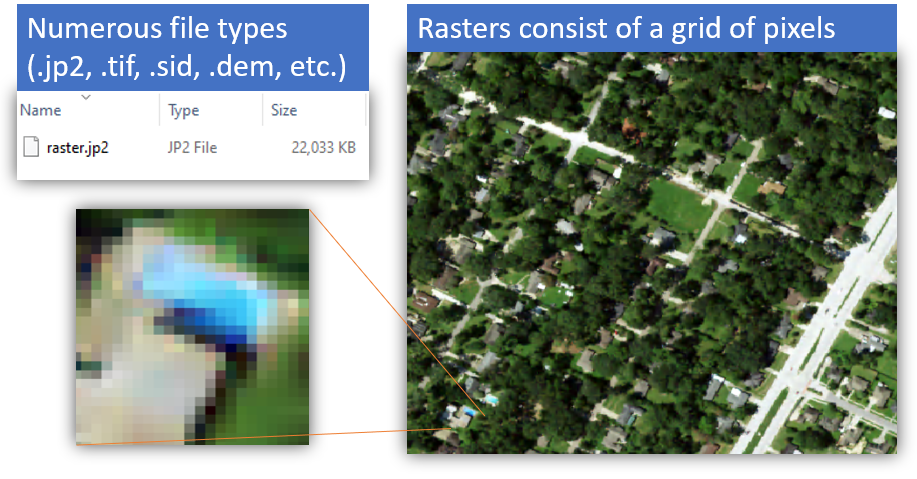
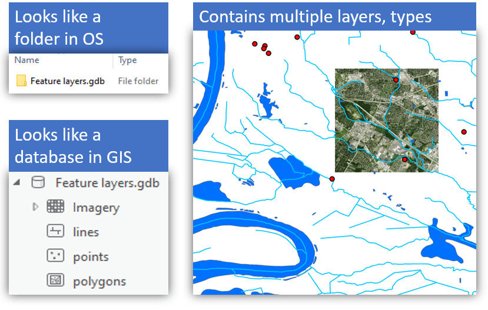
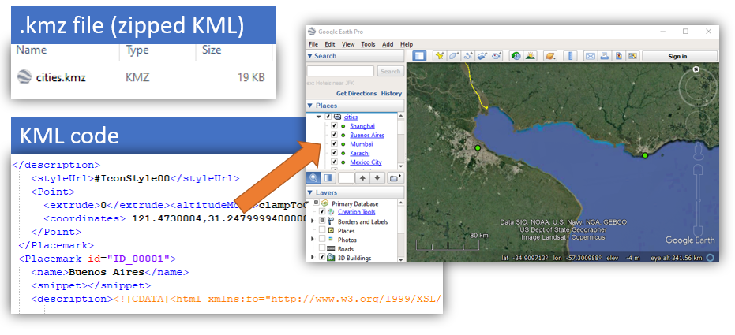
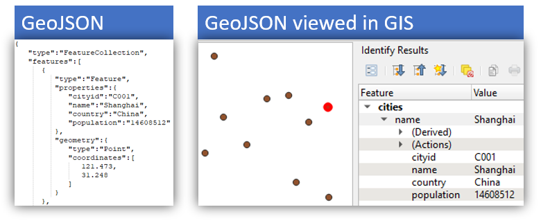
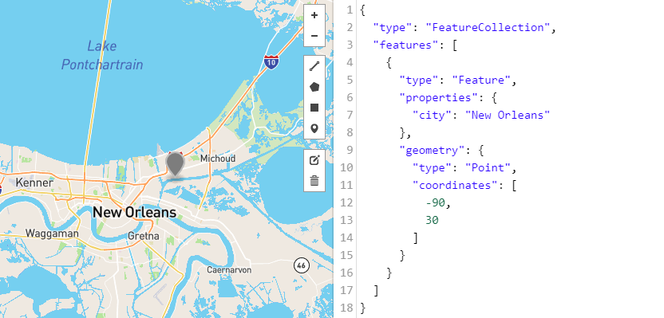
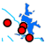
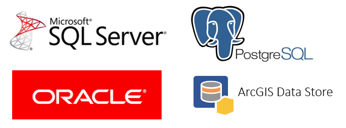

Data formats and standards
Table of Contents
- Introduction
- Why use standards?
- Journey across the Internet
- File and interchange formats
- Web service standards
- Databases
- Summary
Terms: technical standard, CSV, raster, file geodatabase, KML, GeoJSON, open standards, enterprise geodatabase
Introduction
Technical standards are rules that encourage interoperability. In simple terms, they ensure that a product you make will be compatible with a product made by someone else, as long as you both adhere to a standard. Ancient Rome had standards for lane and axle widths for compatibility between roads and horse-drawn carts. Today, many phone manufacturers are following the USB-C standard for charging cables.
In computing, there are standards for how to format data so it can be interpreted by applications. There are file formats for storing files on a computer, such as a Microsoft Word document or an Esri shapefile. There are also interchange formats meant for transferring data between applications over the Internet, such as JSON and GeoJSON formats. Web services will typically format their output in an interchange format, with standards for how requests and responses should look.
Standards can be created by governments, industry organizations, or other stakeholders. The Open Geospatial Consortium (OGC) and the Internet Engineering Task Force (IETF) are two examples of bodies creating standards for Web GIS.
In this lesson we will look at some common Web GIS data formats, standards, and ways for storing data that you might encounter in this course or later when working with Web GIS.
Why use standards?
For an example of why standards are useful in Web GIS, imagine a web service that outputs data on recent earthquakes: time, location, and magnitude. The web service developers must decide how to format their data so it can be read by other applications, such as a website showing a real-time map of earthquakes. The web service developers could make up their own data format, or they could use an existing standard.
Let us say the hypothetical developers make up their own format, and a sample of hypothetical data looks like this:
time?2021-01-17T16:18:18;lat?-20.9464;lon?170.5993;magnitude?4.5
Any other developers who want their applications to read that data will need to learn this format and tailor their code to work with it specifically. This can be a headache, especially when dealing with multiple data providers who all use their own homegrown formats. In our earthquake web map example, let us say the developers wanted to use data from different governments and agencies, each using their own format. The web map would need custom code to interpret each custom format. The developers of the web map would have to try to keep up with any changes in these formats, and update their code accordingly.
Alternatively, the web service developers could decide to use a standard data format, such as comma-separated values (CSV):
2021-01-17T16:18:18,-20.9464,170.5993,4.5
This CSV standard is very common, and there are many existing tools that developers can incorporate into their applications to read CSV data. The web map developers who want to read the earthquake data in this example would not need custom code for a custom format as long as data providers follow the CSV specification. Both data providers and data consumers can be confident that their applications will operate together; in other words, the standard ensures interoperability.
To see this in action, sign into ArcGIS Online (see Assignment 1) and open the map viewer. Click Add, Add Layer from Web, A CSV File. Paste in the URL to the USGS earthquake feed (past hour) https://earthquake.usgs.gov/earthquakes/feed/v1.0/summary/all_hour.csv and click Add Layer. Any earthquakes that occurred in the past hour will appear on the map.
 Figure 1. An earthquake map driven by data in CSV format.
This works because the USGS feed is following a standard, and ArcGIS Online understands that standard. Note that the USGS feed is also offered in other formats, such as GeoJSON and KML covered later in this lesson. ArcGIS Online supports other formats for web services, which we will also look at.
Journey across the Internet
Before looking at more examples, I want to point out that data can be in more than one format during its lifetime, depending on the situation. When a map layer makes its journey across the Internet from a GIS server to your screen, the data will probably take multiple forms.
Recall this figure from the previous lesson. Look at it now from the perspective of data traveling from servers to clients, taking different forms along the way.
 Figure 2. A Web GIS infrastructure with three servers. The web server communicates with public clients and the internal GIS server, which hosts web services. These web services pull their data from the data store.
Figure 2. A Web GIS infrastructure with three servers. The web server communicates with public clients and the internal GIS server, which hosts web services. These web services pull their data from the data store.
Let us use a layer of public recreational facilities in New Orleans as an example.
- The layer lives on the “data store” server in a database—software that uses a series of tables to store the layer’s location data (coordinates of the facilities) and attribute data (park names, year built, etc.).
- When the web service receives a request from a client for the facilities layer, such as when you click the link below, the data’s journey begins. The GIS server retrieves the layer from the database and converts it to a text-based interchange format that can easily be passed over the web to another application. In this case, the layer is available in GeoJSON format.
- Now in the GeoJSON format, the data is transmitted over the web to a client application, such as a desktop GIS program installed on your computer (QGIS works on Linux, macOS, and Windows). The layer can then be saved to a file in yet another format, such as KML.
File and interchange formats
Now take a closer look at common formats seen in GIS for files and data interchange.
Shapefile
The shapefile format was created by Esri to store vector data (points, lines, and polygons). It is an older but popular format that you might have used in an introductory GIS course, though it has been superseded by the file geodatabase. It is still common and could be used to prepare data before uploading to a Web GIS application. Otherwise, it has little use in Web GIS and is mainly mentioned here due to its ubiquity in desktop GIS.
 Figure 3. The shapefile is a classic format in the world of desktop GIS, though its use is now discouraged in favor of other formats and it has little use in Web GIS.
Comma-separated values
The comma-separated value (CSV) format is used to store tabular data as text, with each line of text representing a record, and commas in the records delineating a field. CSV files can be thought of as a spreadsheet, where each line is a row and each field is a column. Despite the name, some CSV implementations use characters other than commas to delineate different fields, such as a semicolon ;.
 Figure 4. The comma-separated values (CSV) format stores data in plain text, with fields delimited by commas or other characters. The format is commonly used for importing and exporting data from computer systems.
CSV is a common format for importing and exporting data from websites and other software. Your bank software might allow you to download your transaction history as a CSV, and ArcGIS Online allows a CSV to be imported to plot coordinates on a map if the CSV contains columns for latitude and longitude.
The introduction of this lesson used an example of a CSV as an interchange format, the USGS earthquake feed. You can also download the CSV to your computer and view it in a text editor or spreadsheet software:
https://earthquake.usgs.gov/earthquakes/feed/v1.0/summary/all_hour.csv
CSV is not unique to GIS and when used for that purpose it is limited to point data only. There is a variation of the CSV, the GeoCSV, that allows for more complex geometry.
Raster
Rasters are images, consisting of a grid of pixels that represent the properties of the ground where the image was captured. Rasters can be photos from satellites and aircraft or they can be color-coded representations of other properties of the ground, such as elevation or land cover. Common standards for raster file types include GeoTIFF, SID, DEM, and JP2. There will be more about rasters in another lesson.
 Figure 5. A raster image, with a portion of the image blown up to show the individual pixels.
File geodatabase
The file geodatabase was created by Esri for the ArcGIS platform but it can be used in other software. It is essentially Esri’s replacement for the shapefile. File geodatabases have a number of advantages: they can hold multiple layers of different types, can be accessed and edited simultaneously by multiple users, and they have a larger file size capacity, among other reasons.
 Figure 6. File geodatabases can store multiple layers of points, lines, polygons, and rasters.
In Web GIS, a file geodatabase is suitable for use on the “data store” (see Figure 2) from which web services pull data to send to clients. File geodatabases can also be uploaded to ArcGIS Online.
They are not, however, used directly over the web in app-to-app communication. A realistic scenario would be to store file geodatabases on a data store where they can be accessed through web services, which serve the data to clients in a format like GeoJSON or KML.
KML
Keyhole Markup Language (KML) is a plain-text format for points, lines, and polygons as well as references to images. It is commonly used to display layers in Google Earth (Google acquired the predecessor to Google Earth from Keyhole Inc.) or for data interchange. KML is a markup language, which will be covered in the lesson on HTML basics, but for now, think of KML as a sort of Word document or webpage but for map layers.
 Figure 6. KML is a language for representing geographic information. KML files can contain points, lines, polygons, and references to images.
GeoJSON
GeoJSON is another plain-text interchange format for points, lines, and polygons. It is based on JSON, JavaScript Object Notation, a widely used standard for interoperability between web applications.
 Figure 7. GeoJSON is a standard for point, line, and polygon data. It is based on JSON, a format widely used for exchanging data via web services.
A basic JSON object looks like this:
{ "someproperty" : "somevalue" }
Building the example a little more, here is another object, representing fruit. The properties of the fruit are on the left, while the values of those properties are on the right. Think of the property names (left side) as column names if the data were in a spreadsheet.
{
"name" : "apple",
"color" : "red",
"flavor" : "sweet",
"rating" : 5
}
GeoJSON works the same way, but with coordinate data and layer attributes instead of fruit. The syntax is more complex but you can still spot the property: value pattern.
{
"type": "FeatureCollection",
"features": [
{
"type": "Feature",
"properties": {
"city": "New Orleans"
},
"geometry": {
"type": "Point",
"coordinates": [
-90,
30
]
}
}
]
}
The GeoJSON sample above contains a single point with an attribute named “city”, with a value “New Orleans”. The GeoJSON can be mapped on geojson.io to see a marker at 30 degrees latitude and -90 degrees longitude.
 Figure 8. GeoJSON data mapped on geojson.io.
Web service standards
Standards for web services specify how requests and responses should look when applications communicate through the service. We will focus on how some popular services are used, rather than the technical specifications themselves. For the most part in this course, we simply take the URL of a web service and enter it into our application.
This section will cover open standards for web services and standards created by Esri for the ArcGIS platform.
Open standards
Open standards are generally accessible to and developed with input from the public. This is in contrast to proprietary standards, which may be a trade secret of a private entity or require licensing. The following open standards for GIS web services were developed by the Open Geospatial Consortium (OGC).
-
Web Coverage Service (WCS) - Responds with raster data, such as satellite images or land use coverage
-
Web Coverage Processing Service (WCPS) - Responds with the result of an image analysis task, e.g., average brightness value of image
-
Web Feature Service (WFS) - Responds with geometry and attributes of vector data, e.g., airport locations and names
-
Web Map Service (WMS) - Responds with a static image of a map, which can include multiple layers
-
Web Map Tile Service (WMTS) - Responds with a series of square images that can be assembled by the client into a map
-
Web Processing Service (WPS) - Responds with results of a feature analysis task, e.g., draw a 1-mile buffer around airports
Some of these service types can be consumed by ArcGIS Online as well as desktop GIS software like QGIS, and any other application that follows OGC standards.
GeoServer is an open-source GIS server application that can provide OGC web services.
Here is a brief cheat sheet on how different kinds of geographic information can be displayed in the OGC web service standards. Note that WMS cannot be used for geoprocessing. For example, if you add a WMS layer of airport points to a map in GIS software, you will not be able to use the layer as input in geoprocessing tools for creating 1-mile buffers around each airport.
| Standard | Typical contents | Can use in geoprocessing | |
|---|---|---|---|
| WCS | rasters | Yes | |
|  | WFS | points, lines, and polygons | Yes |
| WMS | points, lines, polygons, and rasters | No |
Esri standards
Since we will use the ArcGIS platform in this course, here are some common web services from Esri. The table indicates whether they are supported by ArcGIS Online, meaning you can make them with your account used in this course. Those unsupported by ArcGIS Online are only supported in ArcGIS Enterprise, along with a handful of other types not listed here.
| Esri web service | OGC equivalent | ArcGIS Online Support |
|---|---|---|
| Image service | WCS | Yes* |
| Feature service | WFS | Yes |
| Dynamic map service | WMS | No |
| Tiled map service | WMTS | Yes |
| Geoprocessing service | WPS | No |
| Vector tile layer | work in progress | Yes |
*Requires a separate license.
Though the ArcGIS web services are not considered open standards themselves, they may output data in an open format such as GeoJSON, depending on how they are configured by their administrator.
Databases
On servers, geographic information is often stored in databases instead of shapefiles, KML, CSV, or other formats common in desktop GIS. I alluded to the file geodatabase being suitable for servers, but for more advanced functionality or performance requirements, other types of geodatabases are used.
Enterprise geodatabases offer advanced features for large numbers of users, large datasets, multiple simultaneous editors, edit tracking, versioning, replication, security, and more. They are mainly limited by the hardware they are installed on and can be scaled up for high traffic and large databases.
Therefore, while a simple, low-traffic Web GIS application might run fine with a file-based data store, an enterprise geodatabase might be necessary once the requirements become more complex.
Enterprise geodatabases work by installing software called a database management system (DBMS) on a server (the “data store” in Figure 2). The DBMS can be connected to GIS software to create a series of related tables to hold geographic information. GIS software can be used to add data to the database from files. GIS server software can retrieve data from the database in response to requests from web services.
 Figure 9. Examples of database management system (DBMS) software that can be used as an enterprise geodatabase.
Oracle, Microsoft SQL Server, and PostgreSQL are examples of DBMS products that can be used for enterprise geodatabases, all widely used outside of GIS as well. When you upload files to ArcGIS Online, the data is stored behind the scenes in a product called ArcGIS Data Store, a DBMS based on PostgreSQL.
Many DBMS products allow their databases to be queried using a standard language, SQL (structured query language). Unlike the other standards covered in this lesson, SQL is not a format for storing data itself, but a language for communicating with databases to create, read, update, and delete (C.R.U.D.) data. SQL uses an English-like syntax for talking to databases:
SELECT name FROM states WHERE population > 5000000
The assignments in this course will not involve SQL or direct use of DBMS software, but be aware that when using ArcGIS Online, these applications and standards are in use behind the scenes to power our maps.
Summary
Technical standards for data formats help applications exchange data and work together. Even if the applications are developed by different individuals, companies, governments, etc. using different programming languages, operating systems, and devices, technical standards provide a common ground for them to communicate.
There are many data formats in Web GIS, and this lesson introduced simple, common examples.
To put these concepts into practice, in the next assignment you will create your own geographic information saved in plain-text formats (GeoJSON, CSV) and publish the data in a Web GIS (ArcGIS Online) as a web service. You will then create an application to consume the web service and display the geographic information on a map.
↑ Top← Back to Lessons